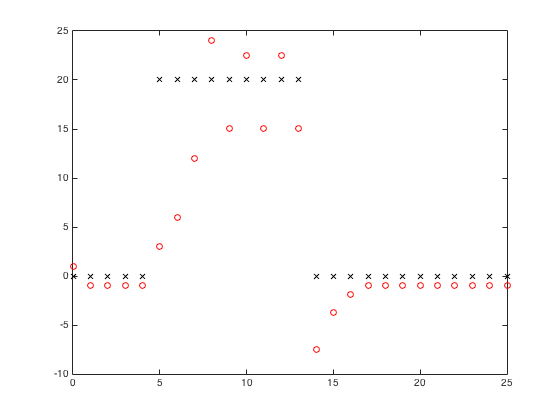
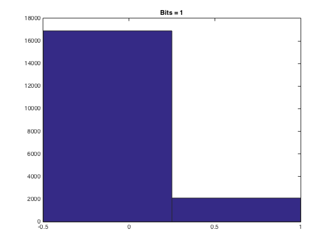
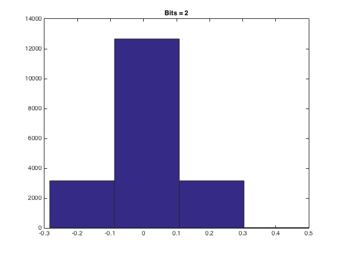
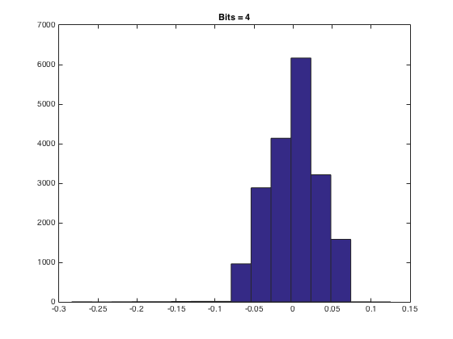
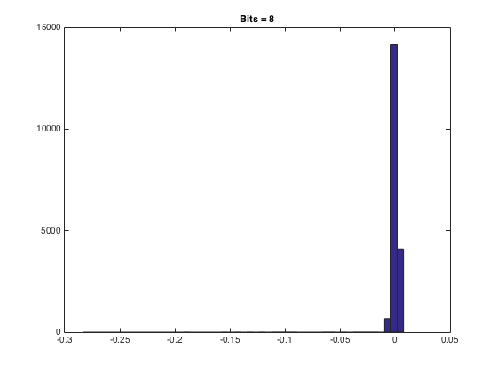
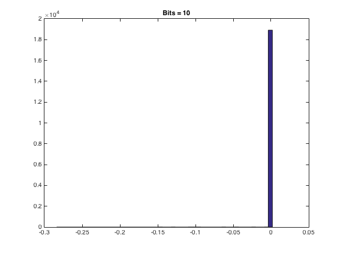
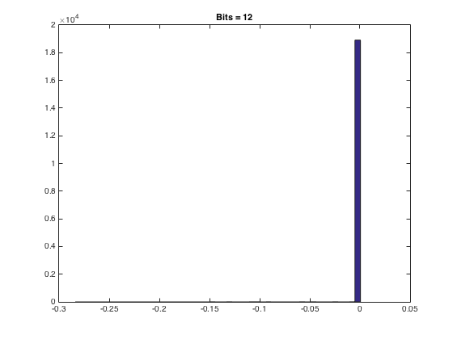

Contents
Problem 4
x = zeros(26,1);
x(6:14) = 20;
delta_vec = [2];
code_vec = [0];
delta_min = 2;
delta_max = 30;
P = 2;
x_hat = [delta_vec(1)/2];
for k = 2:length(x)
deltNext = nextDelta(delta_vec(end),delta_min,delta_max,P, code_vec(end));
delta_vec = [delta_vec; deltNext];
if x(k) < -delta_vec(k)
x_hat(k) = -3*delta_vec(k)/2;
code_vec(k) = 3;
elseif (x(k) > -delta_vec(k)) && (x(k) <= 0)
x_hat(k) = -delta_vec(k)/2;
code_vec(k) = 2;
elseif (x(k) > 0)&& (x(k) <= delta_vec(k))
x_hat(k) = delta_vec(k)/2;
code_vec(k) = 0;
else
x_hat(k) = 3*delta_vec(k)/2;
code_vec(k) = 1;
end
end
plot(0:25,x,'kx',0:25,x_hat,'ro')
x = x';
delta_vec = delta_vec';
formatSpec = '%4.1f %4.1f %4.1f %4.1f \n';
fprintf(formatSpec,code_vec,delta_vec,x,x_hat);
0.0 2.0 2.0 2.0
2.0 1.0 1.0 1.0
1.0 0.0 1.0 0.0
1.0 0.0 2.0 2.0
2.0 2.0 2.0 2.0
2.0 2.0 2.0 2.0
2.0 2.0 2.0 2.0
2.0 2.0 2.0 2.0
4.0 8.0 16.0 30.0
15.0 30.0 15.0 30.0
15.0 7.5 3.8 2.0
2.0 2.0 2.0 2.0
2.0 2.0 2.0 2.0
0.0 0.0 0.0 0.0
0.0 20.0 20.0 20.0
20.0 20.0 20.0 20.0
20.0 20.0 0.0 0.0
0.0 0.0 0.0 0.0
0.0 0.0 0.0 0.0
0.0 0.0 1.0 -1.0
-1.0 -1.0 -1.0 3.0
6.0 12.0 24.0 15.0
22.5 15.0 22.5 15.0
-7.5 -3.8 -1.9 -1.0
-1.0 -1.0 -1.0 -1.0
-1.0 -1.0 -1.0 -1.0

Problem 5
a
[x,fs,bits]= loadwav('s5.wav');
x = x(1300:20300);
x = x/(max(x));
bit = 1;
X = fxquant(x,bit,'round','sat');
error1 = x-X;
figure(1)
hist(error1,2^1); title('Bits = 1');
bit = 2;
X = fxquant(x,bit,'round','sat');
error2 = x-X;
figure (2)
hist(error2,2^2); title('Bits = 2');
bit = 4;
X = fxquant(x,bit,'round','sat');
error3 = x-X;
figure (3)
hist(error3,2^4); title('Bits = 4');
bit = 8;
X = fxquant(x,bit,'round','sat');
error4 = x-X;
figure (4)
hist(error4,51); title('Bits = 8');
bit = 10;
X = fxquant(x,bit,'round','sat');
error5 = x-X;
figure(5)
hist(error5,51); title('Bits = 10');
bit = 12;
X = fxquant(x,bit,'round','sat');
error6 = x-X;
figure(6)
hist(error6,51); title('Bits = 12');
     
b
[P0,F]=pspect(x,fs,512,256);
[P1,F]=pspect(error1,fs,512,256);
[P2,F]=pspect(error2,fs,512,256);
[P3,F]=pspect(error3,fs,512,256);
[P4,F]=pspect(error4,fs,512,256);
[P5,F]=pspect(error5,fs,512,256);
[P6,F]=pspect(error6,fs,512,256);
plot(F,20*log(abs(P0)),'go'); title('Power Spectrum');
hold on; plot(F,20*log(abs(P1)),'*');
hold on; plot(F,20*log(abs(P2)),'ro');
hold on; plot(F,20*log(abs(P3)),'bo');
hold on; plot(F,20*log(abs(P4)),'+');
hold on; plot(F,20*log(abs(P5)),'bo');
hold on; plot(F,20*log(abs(P6)),'mo');
legend('Original','B=1','B=2','B=3','B=4','B=5','B=6');
Undefined function 'pspect' for input arguments of type 'double'.
Error in DSpeechP_HW8 (line 72)
[P0,F]=pspect(x,fs,512,256);
c
sound(x,fs)
sound(error1,fs)
sound(error2,fs)
sound(error3,fs)
sound(error4,fs)
sound(error5,fs)
sound(error6,fs)
d
SNR1 = P0/P1;
SNR2 = P0/P2;
SNR3 = P0/P3;
SNR4 = P0/P4;
SNR5 = P0/P5;
SNR6 = P0/P6;
fprintf(SNR1, SNR2, SNR3, SNR4, SNR5, SNR6);